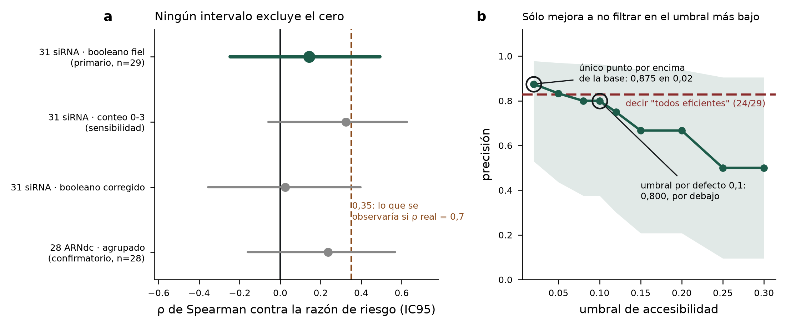

Resultados de la validación retrospectiva pre-registrada
2026-10-21. Detalle y reproducción en RESULTADOS_validacion_retrospectiva.md.
Veredicto, con el criterio fijado de antemano: NO CONCLUYENTE. Es el resultado que el pre-registro declaró como más probable, y el propio documento ya dejó escrito por qué un nulo no refuta el puntaje. No se cambió ninguna decisión después de ver los datos: las tres enmiendas están fechadas y commiteadas antes de calcular la primera asociación (fd0e357 y anteriores).
Motor. ViennaRNA 2.7.2, backend vienna, 22 °C, u = 8, ventana de 21 nt. Los conteos absolutos no son comparables con los de la ola 2; las comparaciones internas sí.
El análisis primario
Sobre los 31 siRNA de 21 nt contra Tc-gawky, ubicados por coincidencia exacta en el transcrito XM_008199034.3 (12.405 nt). Dos quedaron excluidos por no existir en ninguna variante de ARNm ni en el cromosoma de la anotación actual (si1441 y si2443), de modo que n = 29. El motivo es independiente del desenlace: uno tiene razón de riesgo 4,23 y el otro 33,2.
El booleano de si-Fi21 marca 5 de 29 siRNA como eficientes. Su correlación de rangos con la razón de riesgo es ρ = +0,142, con intervalo de confianza del 95 % de [−0,247, +0,492]. El intervalo contiene el cero, así que no se cumple el criterio de «compatible con utilidad»; y contiene también el 0,35 que se observaría si la correlación verdadera fuera 0,7, así que tampoco se cumple el de «fracaso acotado». Cae en la tercera casilla, la que el documento anticipó. [E]
Las tres sensibilidades declaradas apuntan en la misma dirección y ninguna excluye el cero: el booleano en modo corregido da ρ = +0,024 [−0,356, +0,397]; el conteo ordinal de condiciones satisfechas, que es el predictor más informativo de los tres, da ρ = +0,325 [−0,058, +0,625]; y quitando los cinco no estimables, ρ = +0,242 [−0,191, +0,596] con n = 24. [E]
El análisis confirmatorio
Los 28 ARNdc de ocho genes, con el empalme por orden que sigue declarado [?], dan ρ = +0,236 [−0,161, +0,568] en modo fiel y ρ = +0,304 [−0,089, +0,616] en corregido. Dentro de cada gen el promedio es +0,263, con un rango de −0,50 a +1,00 sobre ocho genes de tres o cuatro ARNdc cada uno, que es demasiado poco por grupo para leerlo. [E]
Lo único que se puede decir con los dos conjuntos juntos: las seis estimaciones son positivas, entre +0,02 y +0,33, y las seis incluyen el cero. La consistencia de signo es débilmente alentadora y no es evidencia: con esta potencia, seis estimaciones del mismo signo sobre datos del mismo trabajo no son seis pruebas independientes.
La curva precisión-recall
La base manda: de los 29 siRNA, 24 son positivos por el criterio pre-registrado, así que un clasificador que diga «todos eficientes» acierta el 82,8 %. Barriendo el umbral de accesibilidad de 0,02 a 0,30, la precisión del filtro va de 0,875 a 0,500 y en ningún punto supera esa base de forma apreciable: en el umbral por defecto de 0,1 marca 5 siRNA, acierta 4, y da precisión 0,800 con cobertura del 17 %. Los intervalos de Wilson de esas precisiones van de [0,53, 0,98] en el mejor punto a [0,10, 0,91] en el peor, o sea que el dato no distingue nada. [E]
El falso positivo nunca se filtra: sobrevive a todos los umbrales del barrido.

Lo que este resultado sí establece, y lo que no
No establece que el criterio de si-Fi21 no sirva. Con n = 29, cinco negativos y la atenuación por fiabilidad del desenlace, un criterio bueno y uno inútil producen intervalos casi indistinguibles. Ése era el punto del cálculo de potencia que motivó el pre-registro.
Sí establece tres cosas de método, y las tres son reportables. Primero, que el conjunto etiquetado abierto más grande que existe en insectos no alcanza para validar ni para refutar el filtro, y ahora está medido y no argumentado. Segundo, que la restricción de rango que W6/ANA había anticipado es real y visible en el dato: ningún siRNA del conjunto tiene razón de riesgo cercana a 1, los autores probaron cosas que mataban mucho o nada. Tercero, que con una base de positivos del 83 % la pregunta «¿cuántos de los que mando a testear andan?» no se puede contestar acá, porque casi todos andan.
Qué implica para lo que ya habíamos encontrado
Primero, una corrección de encuadre que hay que hacer antes de presentar esto. Los dos conjuntos que acabamos de analizar ya estaban citados en entregables/critica-herramientas.md como la línea de evidencia en insecto: la tabla de esa crítica trae a Cedden 2025 con Tribolium castaneum, n = 29 y cociente de riesgo 0,9994 (P = 0,853) para la accesibilidad en un modelo de Cox, y el texto menciona además que a nivel de ARNdc largo tampoco fue significativa (P = 0,41, n = 28). Son los mismos 29 siRNA y los mismos 28 ARNdc. Esta validación no agrega una línea independiente: es un reanálisis de una línea que ya teníamos. Lo que cambia es el predictor —los autores probaron su puntaje de accesibilidad en su modelo; nosotros probamos el booleano compuesto de si-Fi21 contra el mismo desenlace— y la conclusión coincide. Decir en la reunión que hay tres líneas independientes contra la accesibilidad sería falso: dos comparten el desenlace de los mismos animales. [E]
Con eso dicho, el resultado refuerza la crítica de T5 sin ampliarla, agrega una cosa nueva y no toca otras.
Refuerza, con una salvedad de peso. La crítica de T5 decía que usar accesibilidad como filtro booleano con umbral fijo no está justificado. Ahora, sobre ese mismo desenlace, el filtro completo de si-Fi21 en su umbral por defecto da una precisión de 0,800 contra una base de 0,828: no mejora a no filtrar. La salvedad es que el intervalo de esa precisión, [0,376, 0,964], no excluye casi nada, así que el refuerzo es de dirección y no de magnitud.
Agrega una cosa que antes era argumento y ahora es medición. Hasta hoy «la validación está sub-potenciada» era un cálculo de potencia hecho antes de correr nada. Ahora está corrida: el intervalo del primario va de −0,247 a +0,492 y contiene tanto el cero como el valor que se esperaría si el puntaje fuera bueno. La afirmación «con los datos abiertos que existen no se puede distinguir un criterio útil de uno inútil» pasó de predicción a resultado observado, y eso es defendible frente a quien pregunte por qué no validamos. [E]
No toca el segundo eje del ranking. La limpieza es un hecho de alineamiento —que una ventana exista o no en un transcriptoma no es una predicción— y nada de esto la afecta. Tampoco toca el benchmark de las tres herramientas, cuyo resultado central es de especificidad y no de eficacia: las dos implementaciones independientes de off-target coinciden exactamente en las 20 celdas, y eso sigue en pie.
Lo incómodo, que conviene decir antes de que lo pregunten. Juntando esto con lo que midió C9, el cuadro es: el eje que ordena el ranking es la eficacia —la limpieza varía un factor 1,015–1,064 entre candidatos contra 2,38–2,50 de la eficacia, así que casi no tiene palanca—, y es justamente el eje cuyo vínculo con la eficacia medida no está demostrado. El eje que sí es un hecho duro casi no mueve el orden. No invalida el entregable, porque el entregable nunca afirmó predecir eficacia y declara su incertidumbre; pero es la tensión central de la propuesta y es mejor plantearla nosotros. [H]
Una pista menor, que no da para conclusión. El conteo ordinal de condiciones satisfechas (0 a 3) correlacionó mejor que el booleano: ρ = +0,325 contra +0,142. Es compatible con la idea de que combinar las tres condiciones con un and tira información que un puntaje graduado conservaría, que es una de las mejoras propuestas en T5. Pero los dos intervalos se solapan casi por completo y con n = 29 la diferencia no es distinguible: vale como hipótesis para un trabajo futuro, no como hallazgo. [H]
Límites
La prueba no es independiente de lo publicado: los autores ya analizaron sus propios descriptores sobre estos mismos 31 siRNA, y dos de los tres que les resultaron predictivos se solapan conceptualmente con las condiciones de si-Fi21. El transcrito de RefSeq y la referencia de los autores difieren por inserciones —los desplazamientos entre la posición del nombre y la hallada van de 280 a 309—, así que cada siRNA se ubicó por secuencia y no por coordenada. El confirmatorio calcula la accesibilidad dentro del fragmento de ~300 pb y no en el contexto del ARNm completo, que es una aproximación heredada del texto original del pre-registro. Todo es Tribolium castaneum, un coleóptero: no hay validación en hemípteros.
Archivos
resultados/validacion_31sirna.tsv (las 29 filas con predictor y desenlace), resultados/validacion_resumen.json (todas las estimaciones y la curva), validacion_retrospectiva.png.